Forming and solving equations gives us the ability to find solutions to many problems in our lives. Let us see a few such examples.
Example 7: Ranjana creates a sequence of arrangements with square tiles as shown below. Can she extend the sequence and make an arrangement using 100 tiles? If yes, which step in the sequence will it be?
Step 1 Step 2 Step 3
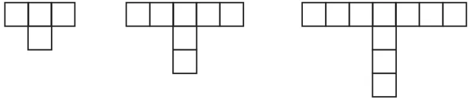
She can look at the pattern in different ways. They are shown below.
Method 1
Step 1 Step 2 Step 3 Step 4 Step
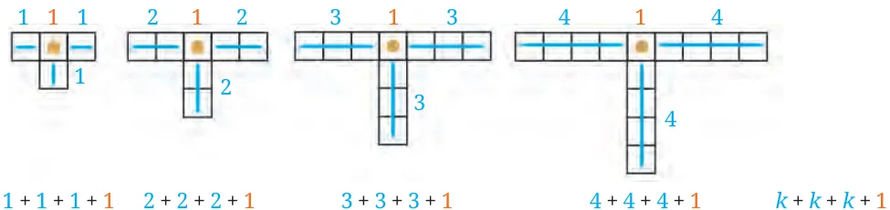
\(+ + + + + + + + + + + + + + +\)
\(= 4 = 7 = 10 = 13 = 3 + 1\)
Method 2
Step 1 Step 2 Step 3 Step 4 Step
\(9 = (4 \times 2 + 1)\)
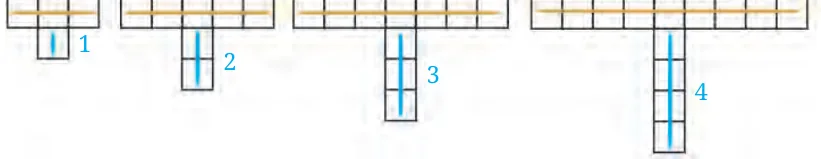
\(+ + + + + (2 + 1) = 4 = 7 = 10 = 4 + (4 \times 2 + 1) = 3 + 1 = 13\)
We have the expression \(3k + 1\) which gives the number of tiles needed to make an arrangement in Step k. To check whether an arrangement is possible using 100 tiles at some Step k, we can solve the equation: \(3k + 1 = 100\). Find the value of k. Example 8: Madhubanti wants to organise a party. She decides to buy snacks for the party from the chaat shop in town. Each plate of snacks costs ₹25. The shop charges an additional fixed amount of ₹50 to deliver the snacks to Madhubanti’s house. There are 5 members in Madhubanti’s family, including herself. Her parents tell her she can spend ₹500 on this party. How many friends can she invite to the party if she wants to give a plate of snacks to each person, including her family and friends?
Fatima’s method of solving this problem is shown below. She represented the situation using a rough diagram.
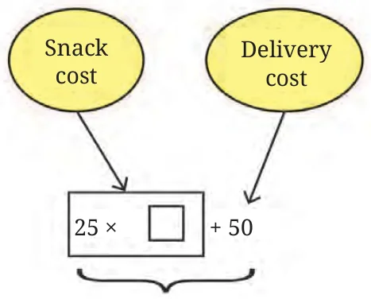
Out of ₹500, if we subtract the fixed delivery charge, then Madhubanti is left with ₹450. So the question becomes "How many plates of snacks, each costing ₹25, can be bought for ₹450?". The answer to this is \(450 \div 25 = 18\). 18 plates of snacks can be bought for ₹450. Considering her 5 family members, she can invite \(18 - 5 = 13\) friends to her party.
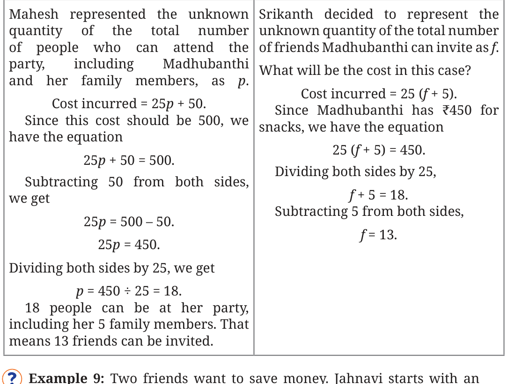
initial amount of ₹4000, and in addition, saves ₹650 per month. Sunita starts with ₹5050 and saves ₹500 per month. After how many months will they have the same amount of money? Let m denote the number of months after which their savings are equal. What are Jahnavi’s savings after m months? Jahnavi Jahnavi’s savings \(= 4000 + 650 m\).
What are Sunita’s savings after m months? Sunita Sunita’s savings \(= 5050 + 500 m\). As these amounts are equal after m months, we get the following equation:
\(4000 + 650 m = 5050 + 500 m\)
\(4000 + 650 m - 500 m = 5050\) (subtracting 500 m from both sides)
\(4000 + 150 m = 5050\)
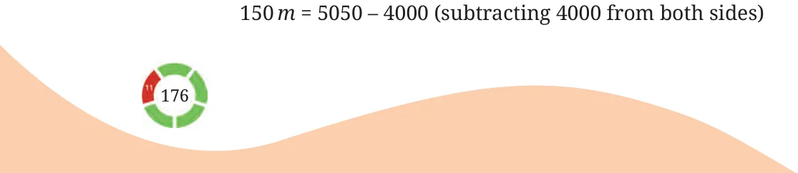
\(150 m = 1050\)
\(m = 1050 \div 150\) (dividing both sides by 150)
\(m = 7\).
So, after 7 months, both will have the same amount of money. Check the answer.
Let us solve a few equations.
Example 10: Solve 28 (x \(+ 4) + 300 = 1000\). Here are some ways to solve this equation.
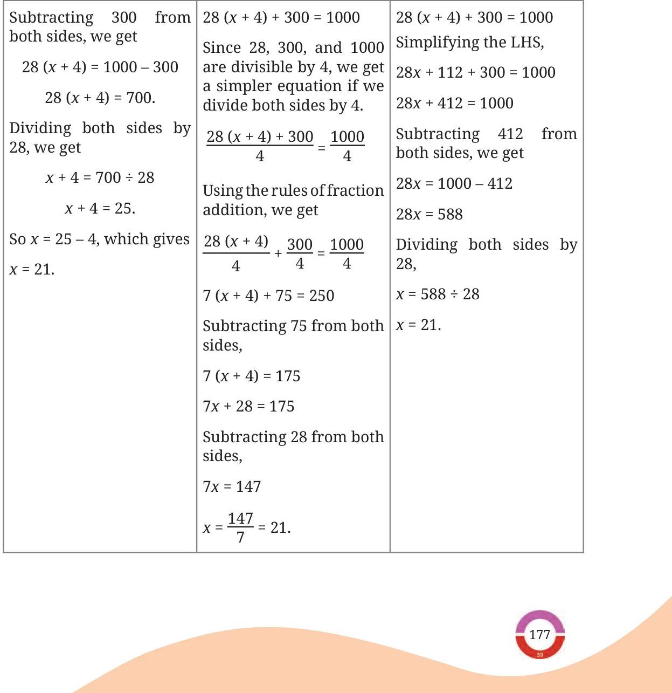
Example 11: Riyaz created a math trick, which he tries out on his friend Akash. Riyaz asked Akash to perform the following steps without revealing the answer to any of the intermediate steps.
- Think of a number.
- Subtract 3 from the number.
- Multiply the result by 4.
- Add 8 to the product.
- Reveal the final answer. The final answer revealed by Akash was
- Using this, Riyaz correctly figured out the starting number that Akash had thought of. Find this number. Try the steps using different numbers as the starting number. Do you see any relation between the starting number and final answer? The answer can be found by algebraically modeling this scenario. In other words, we can form an equation using an unknown. Let the unknown starting number be x.
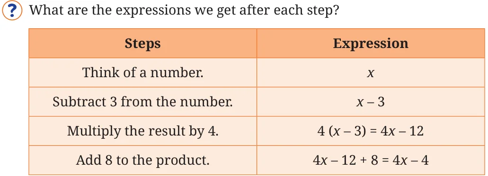
Since Akash’s final answer was 24, we have the equation:
\(4x - 4 = 24 4\) (x \(- 1) = 24\)
\(x - 1 = 6\) (Dividing both sides by 4)
Thus, Akash thought of the number 7.
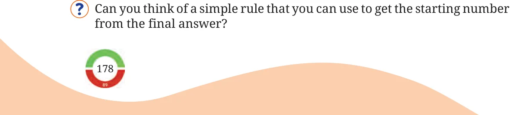
Example 12: Ramesh and Suresh have 60 marbles between them. Ramesh has 30 more marbles than Suresh. How many marbles does each boy have? In this problem, we have two unknowns. If we denote the number of marbles with Ramesh as x and the number of marbles with Suresh as y, then what are the different equations that we have?
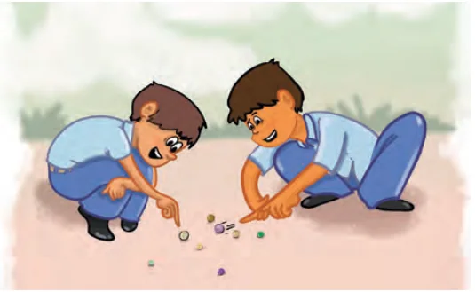
- The total number of marbles is 60.
\(x + y = 60\).
- Ramesh has 30 marbles more than Suresh.
\(= + 30\).
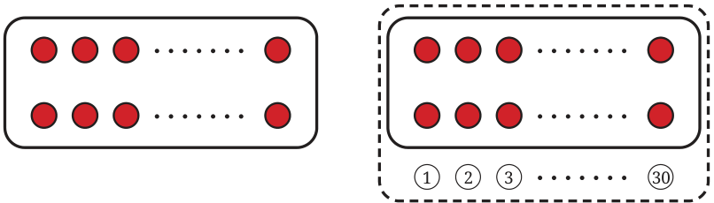
Suresh Ramesh
How do we find the unknowns using these equations? So far, we have only developed a strategy to solve an equation with one unknown! To get such an equation, we can do the following. Denote the number of marbles with Suresh as y, and the number of marbles with Ramesh as \(y + 30\). Since the total number of marbles is 60, we have the equation:
\(y +\) (y \(+ 30) = 60 2y + 30 = 60\).
Use this to find both the unknowns.
Generating Equations
So far, we have solved a given equation to find the value of the letter - number. Can we do the reverse - write equations using a given value of the letter - number?
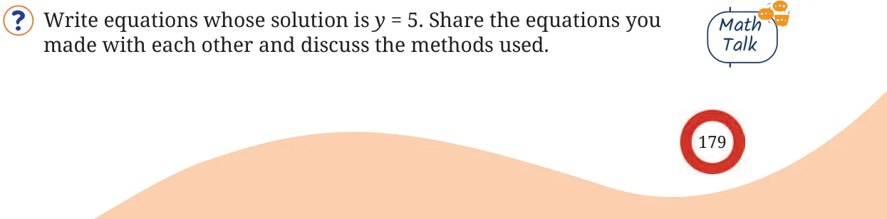
Two such equations are \(y + 1 = 6\) and \(3y = 15\). Consider the following chains of equations, where one is obtained from the previous one by performing the same operation on both sides.
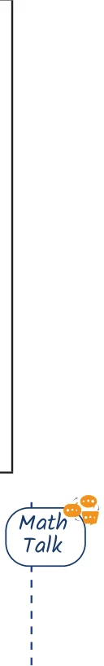
\(+ 1 = 6 3y = 15\)
Multiplying by \(- 1\) Adding 6
\(- y - 1 = - 6 3y + 6 = 21\)
Adding y Dividing by 3
\(- 1 = - 6 + y y + 2 = 7\)
Adding 6 Subtracting 2
\(5 = y y = 5\)
Can you form a chain going from the bottom equation to the top? Compare the operations used when going from the top to the bottom and from the bottom to the top.
Without calculating, can you find the value of the unknown in each equation in the chains above? [Hint: We have seen that the value that satisfies an equation also satisfies the new equation obtained by performing the same operation on both sides of the original equation.]
Example 13: Can you give a real-life situation that can be modelled as the equation, \(100x + 75 = 250\)? Solution: If we think of these numbers as representing money, we can see that the total money is ₹250. There are two terms that are adding to ₹250. The second term in the LHS, ₹75, is fixed and does not change. The value of the first term would change based on ‘x’. So we can think of 100 as the number of units and ‘x’ as the cost per unit. For instance, x could represent the cost of a plate of snacks and 75 could be the delivery charge.